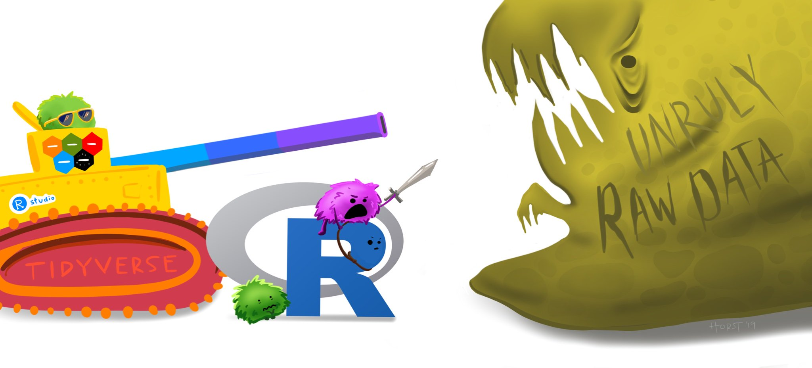
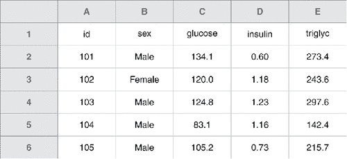
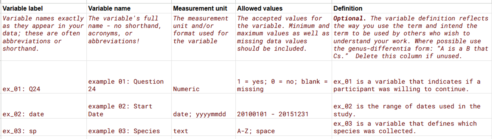

2 Collecting and Organizing Data
We do not clean messy data because our expertise is in analysis.
Underlying principle: be kind to your future self
2.1 Where does your data come from?
Pitfalls: Missing data Inconsistent data -> untrustworthy conclusions Failing to capture data on an important explanatory variable
How data arises is extremely important for what it can tell you
2.2 Data Collection
Plan and test data collection procedures before collecting data Statistical Consulting can advise on experimental or study design If possible, run a mini experiment / pilot study before the real one
Use consistent data collection procedures Train your data collectors & calibrate your equipment Thoroughly document your procedures Collect “extra” data Record the observer, time / dates of collection, etc., etc., etc. Even though these data aren’t typically used in analysis, they’re still important to record! This also helps with the data documentation as well
Researches often start with scientific questions Is treatment A better than treatment B? How can farmers maximize their yield? Experiential design helps researchers test their hypotheses while controlling for external variation Hindsight is 20/20 for a poorly designed experiment Confounding – not able to distinguish between the treatment and other aspects of the experiment (i.e. day of testing) Random may not be what you think is random Scientific conclusions are constrained by the experiment
2.3 Data Entry
Enter and backup data ASAP!
Make your spreadsheet look like your paper data collection sheet Make the paper data collection sheet and the digital data sheet look as similar as possible. You can write code to merge these digital sheets together.
Use simple formats in Excel Keep all raw data in a tab separate from analysis or graphs Margining cells or other formatting will confuse statistical software
Use consistent coding and column names For example, don’t change from “Y” to “Yes”
Be consistent!
2.4 Messy Data?

How to clean it yourself? R’s dplyr and data validation in Excel are your friends.
2.5 Data Validation
How to check if data is cleaned?
Randomly select rows and seeing if they “make sense”
Look at summary statistics, especially outliers
Create exploratory plots
Look for missing data!
Unique category values Cross-validate
If you are transcribing from paper to digital data, you can have two people enter the data and cross-validate
2.6 Spreadsheet Best Practices
“…spreadsheets are best suited to data entry and storage, and that analysis and visualization should happen separately.” (Broman and Woo 2018)
2.6.1 Highlighted Best Practices
Keep raw data raw
Never do analysis in the same tab as raw data!
Lock tabs containing raw data
The less pretty the spreadsheet, the better
Use simple .csv format
Never merge cells
Only have 1 thing in a cell
Do not use formatting as data (i.e. highlighting)
Start fresh with a blank spreadsheet
- Never write over old data to “keep the formatting”
2.6.2 More Advice from Broman and Woo (2018)
“a standard way of mapping the meaning of a dataset to its structure.” –Hadley Wickham in the paper Tidy Data https://vita.had.co.nz/papers/tidy-data.pdf
Tidy Data (cite paper) Each variable forms a column Each observation forms a row Each cell is a single measurement
Also mentioned earlier in the panel: the extra rows and columns might make things look nice, but they break the tidy data principle. Another common thing to change is instead of color coding, use another column for labeling.
- Rows correspond to subjects, columns correspond to variables.
- The first row is variable names. Never use multiple rows for variable names.

Choose short but meaningful names
Do not use spaces, either in variable names or file names
Be careful about extraneous spaces at the beginning or end of a variable name
Avoid special characters, except for underscores and hyphens
Use consistent codes for categorical variables
Use a consistent fixed code for any missing values
Use consistent variable names across files
Use consistent subject identifiers
Use consistent file names
Use consistent phrases in your notes
Write Dates as YYYY-MM-DD (ISO 8601 standard)
Microsoft Excel’s treatment of dates can cause problems in data

2.7 Data Codebook

An example of a data codebook from 538.
Get this data codebook template.
2.8 Modifying and Reformatting Data
Software like R and Python makes this easy. Never do this in Excel (remember, keep raw data raw!) The most important thing is to have your data clean and in a good format, worry about transforming it later!
In R, you can subset, filter, and pivot data.
How you format data will depend on analysis and plotting… You can reformat in multiple way. pivot_wider and pivot_longer are especially helpful for this.
To learn more, see 5 Data Tidying in Wickham, Grolemund, et al. (2017)
Backup your data (use a SSD and cloud storage), use version control with services like Git. (link to using Git in R)